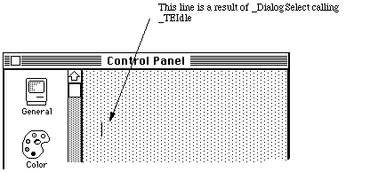

|
|
This Technical Note describes a potential problem with Control Panel devices
(cdevs) that contain EditText fields and presents a way to avoid it.
[Aug 01 1989]
|
Introduction
The Control Panel chapter in Inside Macintosh, Volume 5 describes, in
detail, how run-time errors are handled by the Control Panel and a cdev. There
is, however, a potential problem with cdevs that contain EditText
items that this chapter does not cover.
When a cdev is called by the Control Panel, the cdev's 'DITL' resource
is concatenated to the Control Panel's 'DITL'. The Control Panel then
lets the Dialog Manager update the window. If the cdev contains an item of
type EditText, the Dialog Manager allocates and activates a
TEHandle to be used for displaying and editing text. All of this
action happens before the cdev gets the initDev message from the
Control Panel.
As detailed in The Control Panel chapter, if an error occurs from which a cdev
cannot recover, the cdev should dispose of any private memory and return the
appropriate error code or a NIL value to the Control Panel. The
Control Panel then grays out the cdev's area, displays the appropriate error
dialog, and then deletes the items that were added to its 'DITL'.
All of this is fine, except that the TEHandle does not get
deallocated. The EditText items get thrown away, including the
strings in the item list that the Dialog Manager would use to store text
entered into the EditText field, but the TEHandle stays there
and stays active. Figure 1 illustrates what this would look like.

Figure 1. Erroneous Insertion Point
So the Dialog Manager, knowing that it allocated a TEHandle for an
item that was visible, goes merrily on its way flashing the insertion point.
The problem is not simply one of appearance. If a user hits a key, the Dialog
Manager tries to process the key-down event just as if the EditText
item was still available, and this series of events causes a rather nasty
crash.
Fortunately, the solution for this problem is a very simple one. If an
EditText item is hidden with a _HideDItem call, the Dialog
Manager does not consider it active and will not try to process key-down events
for it. So if your cdev contains EditText items, part of your error
handling should be to first hide the EditText items with a call to
_HideDItem before returning an error code or a NIL as the
cdev's function result.
Back to top
References
Inside Macintosh, Volume I, The Dialog Manager
Inside Macintosh, Volume IV, The Dialog Manager
Inside Macintosh, Volume V, The Control Panel
Back to top
Downloadables
|

|
Acrobat version of this Note (100K).
|
Download
|
|